Implied post-money valuation: $200,000
AI Cloud IDE + Multi-Agent Software Factory
APEX-BUILD is the product built to take share from the AI coding platforms users already complain about.
This demo shows the actual product surfaces: the landing page, build flow, state-of-the-art orchestration, browser IDE, BYOK settings, spending ledger, and admin controls. The raise is $10,000 for 5% to formalize the company, keep the AI rails funded, launch publicly, and start converting users away from Replit, Bolt, and v0.
We are entering a category that already supports very large outcomes.
Why now
Users want AI-native development. They do not want hidden costs, weak recovery, shallow IDEs, or platform lock-in.
Why APEX-BUILD
The product was designed around those exact pain points and makes “Migrate from Replit” an explicit wedge.
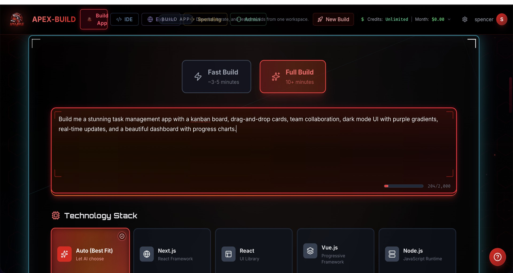
One workspace for prompting, orchestration, IDE, admin, spend, and deployment.
The very first screen already shows prompt input, stack direction, power mode, and the rest of the platform shell.
The Product
This is the demo: the product surfaces users see before they ever buy, upgrade, or churn.
The landing experience is not filler. It explains the exact value proposition clearly: multi-agent execution, visible spend, a real browser IDE, BYOK, integrations, ownership, and transparent pricing.
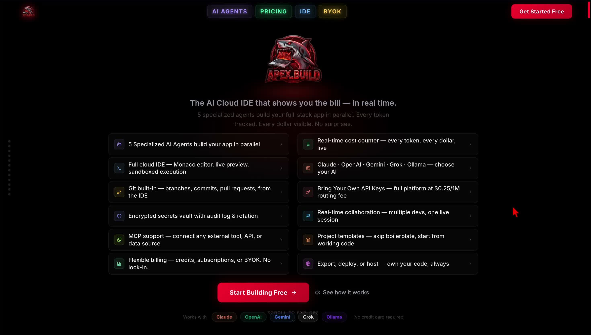
The landing page leads with agents, spend visibility, model choice, BYOK, and ownership.
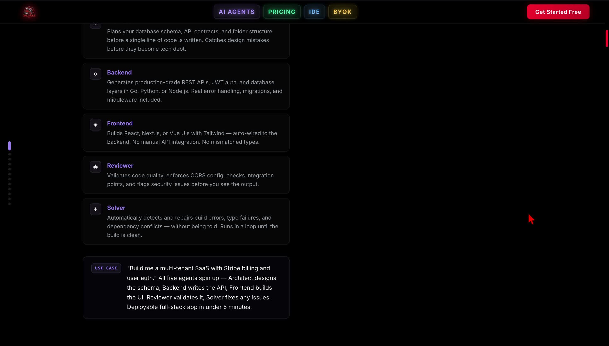
This addresses one of the most common complaints with AI products: “I do not know what I am paying for.”
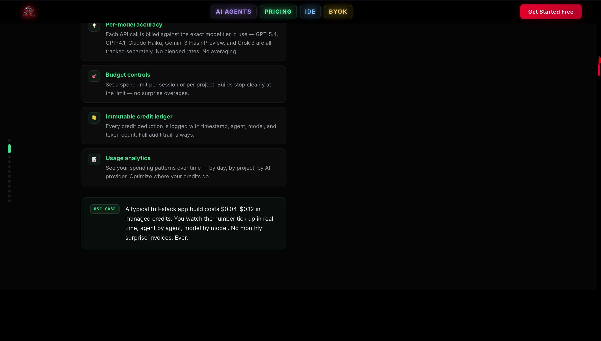
The product is positioned as a true browser IDE, not just a prompt box.
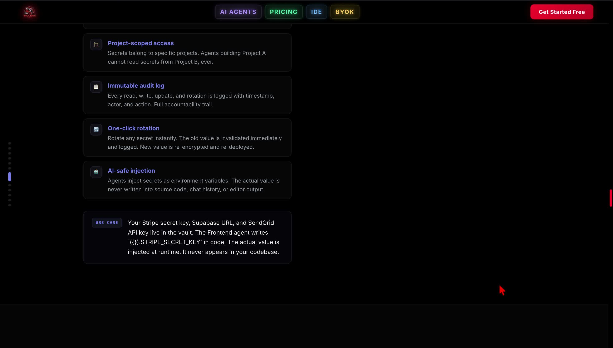
MCP and external-tool connectivity turn agents into operators, not just code writers.
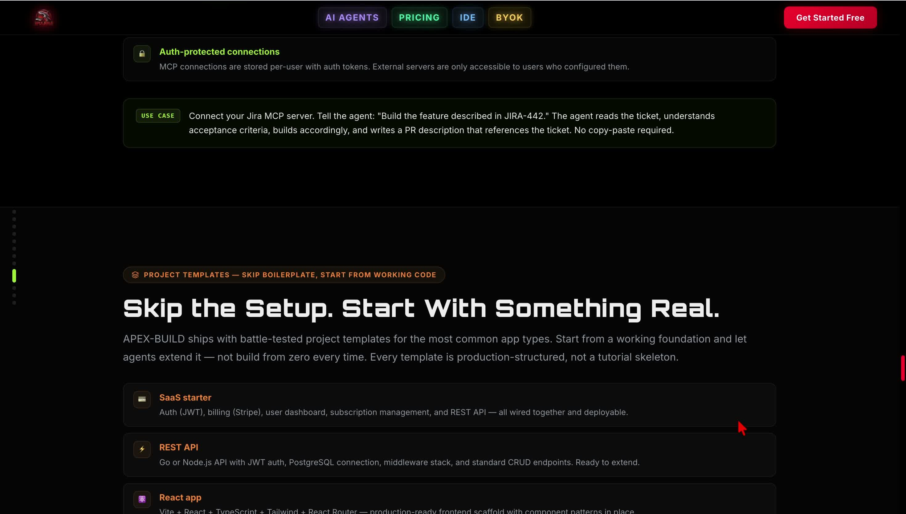
Own what you build is not marketing filler. It reduces lock-in and lowers adoption anxiety.
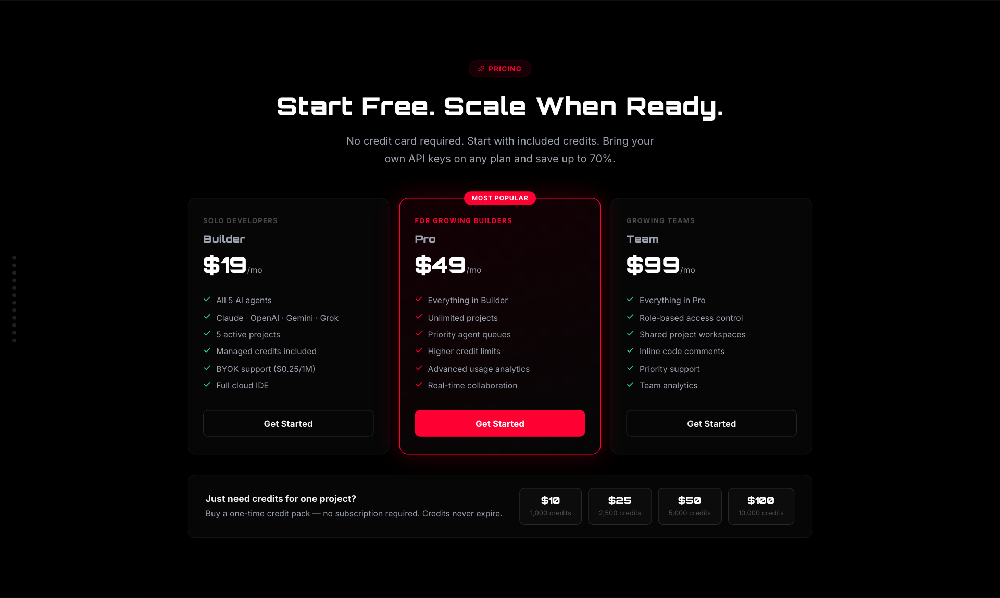
Pricing already frames Builder, Pro, Team, plus one-time credits and BYOK savings.
Build Workflow
The first conversion moment is simple: describe the app, select the stack, and let the system coordinate the work.
The workflow matters because it is how non-technical users enter the product while still giving technical users control over stack, power mode, and execution style.
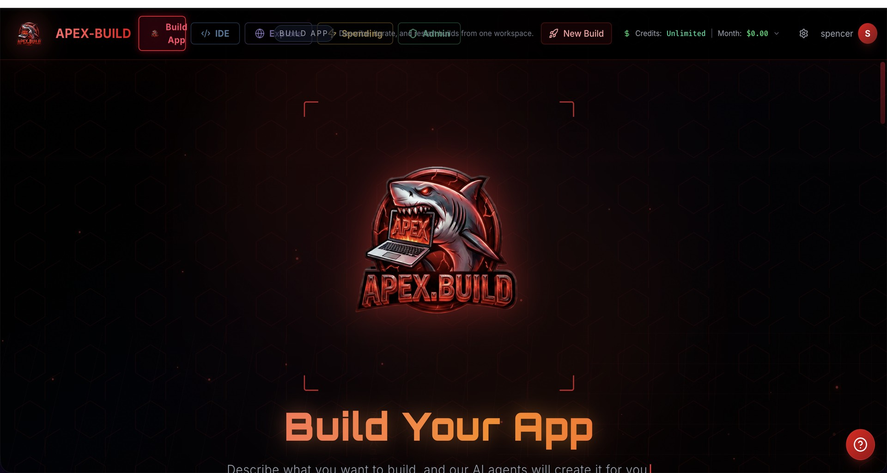
The build surface looks like a product control room, not a generic prompt box.
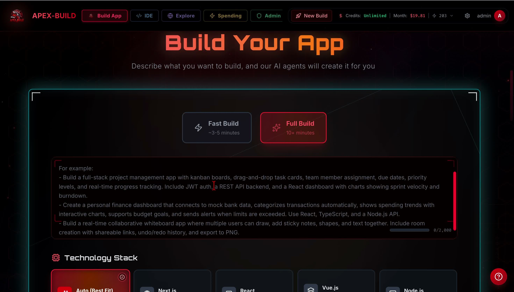
Stack choice is visible and editable instead of hidden behind “trust the AI.”
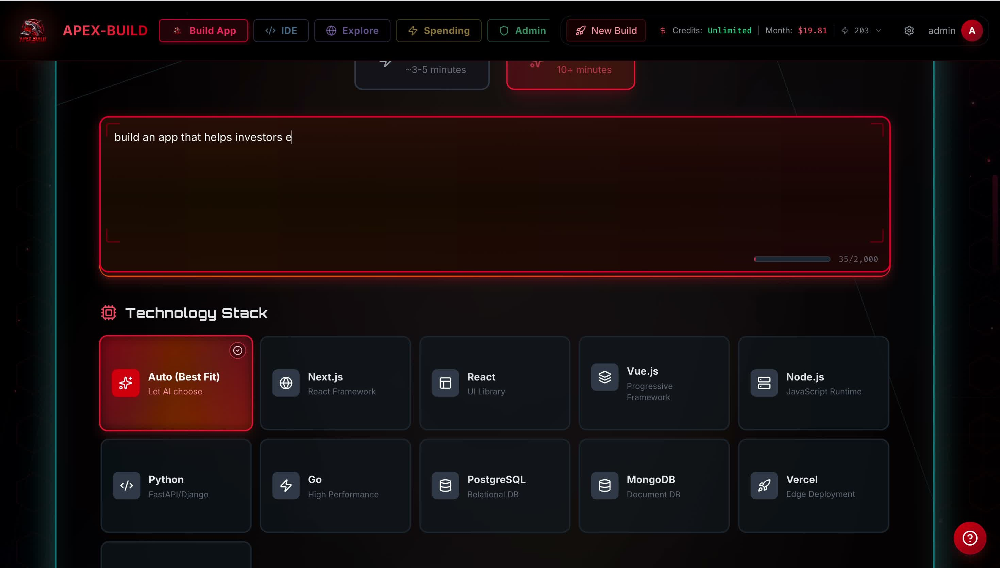
The system accepts natural-language intent, which expands the TAM beyond expert developers.
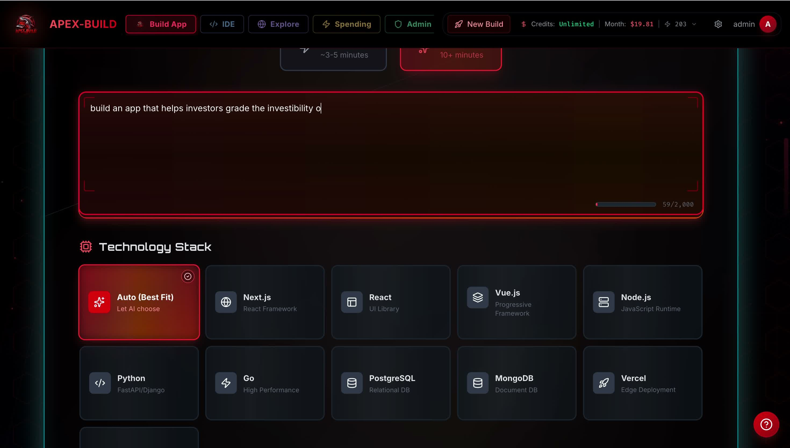
This is the moment where the product translates intent into execution.
AI Orchestration
The redesigned orchestration system is the product’s technical edge.
The goal is not “one model writes everything.” The goal is contract-first planning, scoped work orders, model/provider routing, transparent live execution, and recovery that looks like a software pipeline instead of blind retries.
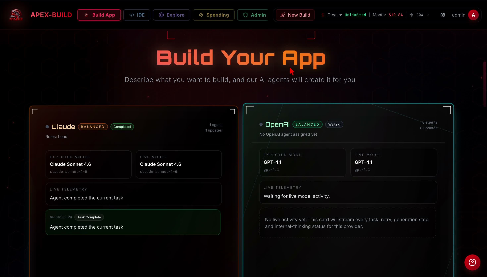
Provider lanes show which model is actually active, expected, completed, or waiting.
This turns orchestration into a visible product feature rather than invisible backend magic.
01
Contract-first planning
Before execution, the system freezes a build contract so the app has explicit surfaces, acceptance criteria, and runtime expectations.
02
Work orders by surface
Frontend, backend, data, verification, and repair tasks are scoped independently instead of asking one agent to improvise everything.
03
Provider-aware routing
Power modes and provider preferences decide whether Claude, OpenAI, Gemini, Grok, or BYOK routes handle the task.
04
Verifier and repair ladder
Bad output can be critiqued, blocked, repaired, and revalidated instead of simply rerun until the user gives up.
05
Patch-first recovery
The platform preserves patch bundles and repair artifacts, which makes recovery cheaper, more explainable, and easier to audit.
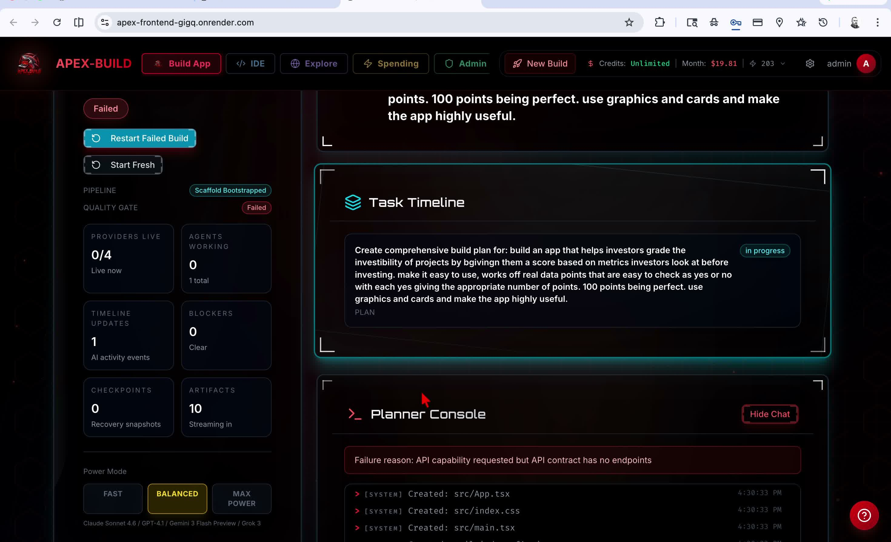
This is what quality control looks like before burning more tokens.
The system blocks impossible builds early instead of pretending everything is fine and failing expensively later.
Platform Depth
APEX-BUILD has enough surface area to become a daily workspace, not a novelty tool.
This is where the moat forms: a real IDE, real BYOK controls, real spend visibility, and real operator/admin capabilities. These are the reasons users stay after the first successful build.
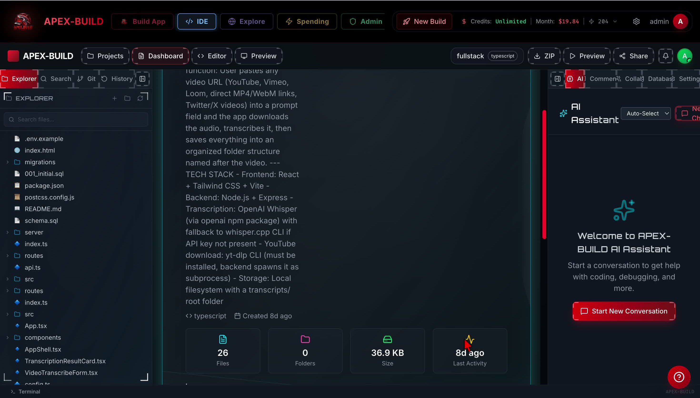
File tree, code editor, preview tools, and AI assistant are all visible at once.
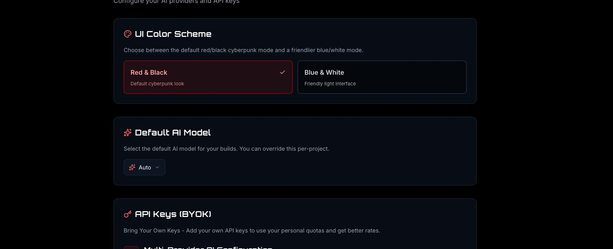
BYOK is a conversion unlock for power users and teams already paying model vendors directly.
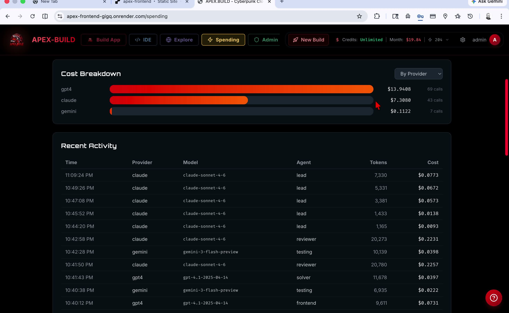
Every provider, model, agent, token, and cost event becomes legible.
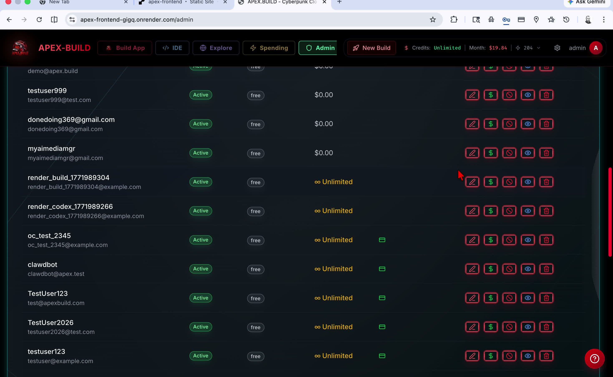
Credits, user status, visibility, and operator actions are already present.
Why We Win
The product is designed around the exact user complaints that create churn in incumbent tools.
This is the competitive argument. The category is proven. The weakness is product quality and trust. APEX-BUILD is positioned to win on both.
Decision point
What frustrates users elsewhere
How APEX-BUILD answers it
Model choice
Single-provider lock-in or weak override controls
Multi-provider routing, power modes, manual choice, and BYOK
IDE depth
Shallow editing after generation
Real browser IDE with code, preview, assistant, and project structure
Cost clarity
Opaque credits and surprise bills
Live spend dashboard, budget caps, billing controls, and ledger visibility
Recovery
One AI retries blindly and hides the failure process
Contract gating, verifier lanes, repair flows, and visible planner feedback
Ownership
Export friction and platform dependence
Own what you build, Git export, deploy on the user account, no hostage model
Migration
No deliberate switch path away from the incumbent
Direct “Migrate from Replit” wedge built into the product narrative
The moat is not the first prompt. The moat is the workspace.
A user who builds, edits, previews, collaborates, exports, deploys, manages keys, and tracks spend in one place becomes materially harder to lose.
BYOK plus transparent plans reduce pricing objections without sacrificing margin.
APEX-BUILD can monetize subscriptions, credits, and orchestration fees while letting power users bring their own vendor contracts.
The message is simple: leave the black box, keep control, ship faster.
The product story is strong enough to spread via demos, creator content, migration offers, and founder-led sales without needing a massive sales org first.
Economics + Use Of Funds
The raise is for launch execution, not exploration.
The product already exists. The capital unlocks company formation, AI runway, subscriptions, domain and launch ops, and customer acquisition.
Use of funds
AI API runway for launch$3,500
Claude, ChatGPT, Gemini, Grok subscriptions$1,200
LLC registration, accounting, legal setup$1,400
Domain, hosting, monitoring, launch ops$900
Advertising, creator outreach, launch content$2,200
Unexpected launch expenses buffer$800
Total$10,000
90-day launch plan
Days 0-30
Finish launch readiness
Finalize entity formation, fund provider rails, tighten onboarding, polish the product narrative, and push live.
Days 31-60
Drive inbound attention
Run founder-led demos, creator outreach, migration messaging, and targeted ads around switching from incumbent tools.
Days 61-90
Convert and iterate
Push free-to-paid conversion, learn from spend behavior, deepen templates, and prepare the larger follow-on round.
Blended revenue model
The projection model assumes a blended $49/month ARPU driven by subscriptions, credit top-ups, and high-intent users who value orchestration, the IDE, visibility, and BYOK flexibility.
Subscriptions
Credit top-ups
BYOK routing margin
Team upgrades
Future enterprise features
Return Profile
If APEX-BUILD reaches 1,000 paying customers, the value of 5% changes very quickly.
These projections are intentionally optimistic, but still anchored in a reasonable premium developer-SaaS revenue multiple range.
Paying customers
MRR
ARR
8x-12x ARR value
Value of 5%
100
$4,900
$58,800
$470K-$706K
$23.5K-$35.3K
500
$24,500
$294,000
$2.35M-$3.53M
$117.5K-$176.5K
1,000
$49,000
$588,000
$4.70M-$7.06M
$235K-$353K
2,500
$122,500
$1.47M
$11.76M-$17.64M
$588K-$882K
At 1,000 paying customers, the company steps into a very different valuation bracket.
If launch lands and APEX-BUILD proves it can attract and retain 1,000 paying users, the implied value of the current 5% position can move from a $10,000 entry to a multiple-hundred-thousand-dollar outcome.
An additional $75,000 investment opportunity can be reserved exclusively for this investor.
If launch succeeds and the company decides to build more aggressively, the next larger allocation can be offered solely to this investor first, allowing a materially larger ownership position before a broader raise.